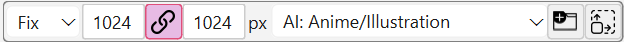
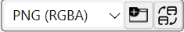

Resize & convert
Change image size (including high-quality AI upscaling), convert format and color mode, and reduce file size.
Resize

1234567
| 1Mode | Fix (fixed size) / % (percent) / Lng (long side). |
| 2Width | New width. |
| 3Lock aspect ratio | When on, keeps the aspect ratio. |
| 4Height | New height. |
| 5Upscale method | Standard Resize or AI upscalers (see below). |
| 6Folder | When on, running processes every image in the same folder (you choose to overwrite or save separate files first). |
| 7Run | Runs the resize. |
Upscale methods
AI upscaling gives higher quality but takes longer than Standard Resize.
| Method | Best for |
|---|---|
| Standard Resize | Non-AI scaling. Use this for downscaling. |
| AI: Anime/Illustration | Illustrations and anime-style images |
| AI: Balanced | When unsure |
| AI: Fine Lines/Texture | Line art and fine patterns |
| AI: Nature/Texture | Landscape photos |
| AI: Photo Restore | People and other real photos |
| AI: Lite/Fast | When speed matters most |
Format conversion & compression

123
| 1Format | PNG / JPG / WEBP / PDF / Compress, and RGB / RGBA (with or without transparency). |
| 2Folder | When on, running processes every image in the same folder (you choose to overwrite or save separate files first). |
| 3Convert | Converts to the chosen format and color mode. |
- When converting you can choose "Convert and Keep Original" or "Convert and Delete Original". When compressing, choose keep or replace.
- Choosing PDF with folder batch combines all images in the folder into one PDF.
- JPEG / WebP quality, PNG compression level, PDF creation and PNG color reduction for compression (up to 256 colors) can be changed in Settings.